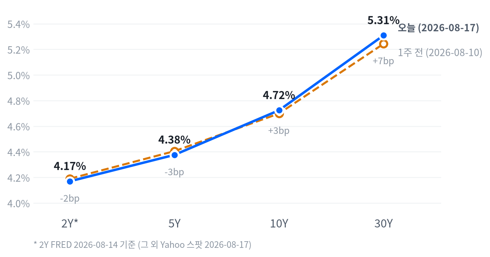

8월 17일(월) 뉴욕증시는 미-이란 양해각서 만료를 계기로 지정학 리스크가 재부각되며 나스닥 -0.32%, S&P500 -0.52%, 다우 -0.51%로 동반 하락 마감했다. WTI는 지정학 프리미엄에 +3.09% 급등했고 30년물 국채금리는 2007년 이후 최고치를 경신했다. 반면 일론 머스크의 "메모리 병목" 발언과 Mizuho의 AI 네트워킹 서플라이체인 노트가 각각 메모리주(마이크론 +4.13%, WDC +5.35%)와 광네트워킹주(마벨 +5.54%, Coherent +7.79%)를 지수 흐름과 무관하게 끌어올렸다.
동인. 오늘 장의 단일 최대 동인은 미-이란 양해각서 만료发 지정학 리스크다. 유가·장기금리가 동반 급등하며 주식은 할인율 상승 경로로, 채권은 기간프리미엄 확대 경로로 같은 이벤트에 반응했다. 메모리·AI 네트워킹 개별주 강세는 이 매크로 흐름과 독립적인 종목별 촉매(머스크 발언, Mizuho 노트)로, 지수 하락 속에서도 자금이 특정 테마로 몰릴 수 있음을 보여준다.
크로스에셋 정합성. 유가 급등·장기금리 급등·주식 하락·달러 보합·금 강세라는 조합은 내적으로 정합적이다. 인플레이션 재점화 우려가 채권을 팔고, 그 결과 할인율이 오르며 주식(특히 금리 민감 섹터)이 눌리는 동안, 금은 지정학 헤지와 실질금리 부담 완화 기대를 동시에 흡수했다. 다만 달러가 안전자산 강세를 보이지 않았다는 점은 이번 리스크오프가 아직 "패닉"보다는 "재가격"에 가깝다는 신호다.
다음 촉매. 이번 주 이후 시장은 두 축을 함께 볼 것이다. 하나는 지정학 뉴스플로우(호르무즈 통항 상황, 이란 협상 재개 여부)이고, 다른 하나는 9월 CPI로 이어지는 인플레이션 경로 확인이다. 두 축이 동시에 악화되면 채권·주식 동반 조정이 재발할 수 있고, 반대로 지정학 리스크가 완화되면 오늘의 조정은 빠르게 되돌려질 개연성이 높다.
| 지수 | 종가 | 등락률 |
|---|---|---|
| 나스닥종합 | 26,644.91 | -0.32% |
| S&P500 성장 | 141.49 | -0.35% |
| 러셀2000 | 3,057.54 | -0.35% |
| 다우존스 | 53,459.78 | -0.51% |
| S&P500 | 7,745.06 | -0.52% |
| S&P500 가치 | 236.64 | -0.61% |
| 섹터 | 종가 | 등락률 |
|---|---|---|
| Energy | 62.58 | +1.08% |
| Technology | 190.32 | +0.16% |
| Industrials | 186.32 | -0.10% |
| Health Care | 167.05 | -0.19% |
| Utilities | 44.18 | -0.29% |
| Materials | 52.24 | -0.57% |
| Real Estate | 44.83 | -0.97% |
| Financials | 57.58 | -1.00% |
| Consumer Discretionary | 116.75 | -1.23% |
| Consumer Staples | 84.68 | -1.64% |
| Communication Services | 110.82 | -1.89% |
3대 지수는 모두 09:30 개장가가 당일 고점이었고, 이후 낙폭을 키워가는 전형적 "오전 강세 → 오후 매도" 패턴을 그렸다. 나스닥은 09:30 26,795.6(당일 고점)에서 15:30 26,627.4까지 개장 대비 -0.63% 밀렸다가 종가는 26,649.1로 저점에서 소폭만 반등해 마감했다. S&P500도 09:30 7,790.68 고점에서 15:30 7,744.88 저점(개장 대비 -0.59%)까지 미끄러진 뒤 저점 바로 위인 7,746.14로 마쳤다.
러셀2000은 다른 궤적을 보였다 — 10:30 3,061.7까지 오전 중 한 차례 더 오른 뒤 14:00 3,052.0 저점을 찍고 종가 3,057.6으로 저점 대비 일부를 되돌렸다. CNBC·Yahoo Finance는 오후 장에서 유가 급등에 따른 인플레이션·금리 우려가 부각되며 지수가 낙폭을 키웠다고 설명했는데, 이는 intraday 데이터의 오후 저점 형성 시점과 맞물린다.
섹터 로테이션은 뚜렷했다. Energy(+1.08%)가 유가 급등을 그대로 반영하며 유일하게 확실한 강세를 보였고 Technology(+0.16%)도 메모리·AI 인프라 개별주 강세에 힘입어 플러스를 지켰다.
반면 금리 급등에 민감한 Communication Services(-1.89%), Consumer Staples(-1.64%), Consumer Discretionary(-1.23%), Financials(-1.00%)의 낙폭이 컸고, S&P500 가치주(-0.61%)가 성장주(-0.35%)보다 더 빠졌다는 점은 이번 조정이 단순 성장주 밸류에이션 부담보다 금리 상승 자체에 대한 전방위 반응에 가깝다는 신호다.
지정학 이벤트발 하루 조정은 추세 반전 신호로 보기 어렵다. 다우는 5개월 연속 상승 흐름을, S&P500·나스닥은 3개월 만의 첫 월간 상승을 노리던 국면에서 나온 조정이라 포지션을 서둘러 정리할 이유는 약하다. 다만 Energy가 유일한 확실한 상승 섹터였다는 점과 금리 민감 섹터의 낙폭이 컸다는 점은, 유가·금리 급등이 추가로 진행될 경우 밸류에이션 압박이 대형 성장주로 옮겨붙을 수 있다는 경계 신호로 읽어야 한다.
| 만기 | 종가 (2026-08-17) | 전일比 | 1주 전 | 주간 변화 |
|---|---|---|---|---|
| 2Y* | 4.17% | +2.0bp | 4.19% (08-07) | -2.0bp |
| 5Y | 4.376% | +1.4bp | 4.405% (08-10) | -2.9bp |
| 10Y | 4.724% | +2.8bp | 4.699% (08-10) | +2.5bp |
| 30Y | 5.309% | +4.4bp | 5.243% (08-10) | +6.6bp |

30년물이 5.309%로 2007년 이후 최고치를 재차 경신했다고 Yahoo Finance가 보도했다. 오늘 하루로는 전 만기가 모두 상승했지만 상승폭이 만기가 길수록 커져(2Y +2.0bp → 30Y +4.4bp) 베어 스티프닝이 진행됐고, 이는 유가 급등에 따른 인플레이션 재점화 우려가 장기물 프리미엄을 밀어올린 결과로 풀이된다.
1주 전 대비로 보면 흐름이 더 뚜렷하다. 5Y는 -2.9bp 내린 반면 10Y는 +2.5bp, 30Y는 +6.6bp 올라 벨리 대비 장기물이 확연히 더 팔렸다 — 전형적인 베어 스티프닝이 이번 주 내내 진행 중이라는 뜻이다. 5s30s 스프레드(둘 다 Yahoo 동일자 기준)는 93.3bp로 주간 +9.5bp 확대돼 이 스티프닝을 단일 기준일로도 확인해준다.
2s10s는 55.4bp(2Y FRED 08-14 vs 10Y Yahoo 08-17 혼합 기준)로, 동일자 FRED 기준(2Y·10Y 모두 08-14)으로는 51.0bp다. 두 값의 차이(4.4bp)는 5bp 문턱을 넘지 않아 대부분 실제 커브 변화이지 기준일 불일치의 산물이 아니라고 볼 수 있다. 다만 2Y의 주간 변화(-2.0bp)는 5Y·10Y·30Y와 관측 구간(08-07~08-14)이 하루 다르다는 점을 감안해, 단기물 판단만은 단정적으로 쓰지 않는다.
듀레이션 전략: 장기물 프리미엄 확대가 진행형인 구간에서는 30년물 신규 편입을 서두를 이유가 없다. 벨리(5Y) 구간은 주간 기준 유일하게 금리가 내려 캐리와 방어력을 겸비하는 만큼 유지하되, 장기물은 지정학 리스크의 실제 완화 신호(예: 30Y가 5.05% 아래로 되돌림)를 확인한 뒤 확대하는 편이 낫다.
| 페어 | 종가 | 등락률 |
|---|---|---|
| DXY | 99.58 | -0.09% |
| USD/KRW | 1,415.19 | -0.12% |
| USD/JPY | 159.39 | -0.02% |
| EUR/USD | 1.1581 | +0.39% |
USD/JPY는 08:30 ET 158.84 저점에서 19:30 159.60 고점까지 장중 내내 완만하게 우상향해 159.39로 마감했다(개장 대비 +0.29%p 고점, -0.19%p 저점). 지정학 리스크가 부각된 날임에도 엔이 안전자산 매수 수요만큼 강해지지 못한 것은, 미 장기금리 급등이 미-일 금리차 확대 기대를 동시에 자극했기 때문으로 풀이된다.
DXY는 하루 -0.09%로 사실상 보합에 가까웠고, 유로가 +0.39%로 소폭 강세를 주도했다. 지정학 리스크가 켜졌는데도 달러가 뚜렷한 안전자산 강세를 보이지 못한 것은 이번 리스크오프의 진원지가 유가·금리라는 점, 즉 통화보다 상품·채권 시장에서 먼저 소화되고 있다는 뜻으로 읽힌다.
| 품목 | 종가 | 등락률 |
|---|---|---|
| WTI | $84.95 | +3.09% |
| Brent | $91.10 | +2.91% |
| Gold | $4,473.10 | +2.12% |
| Natural Gas | $2.704 | -1.06% |
WTI는 최대 변동폭을 기록했다. 새벽 03:00 ET $81.50 저점에서 출발해 낙폭 되돌림 없이 꾸준히 상승, 마감 직전 16:30 $85.04 고점을 찍고 +3.09%로 마쳤다(개장 대비 저점 -0.82%, 고점 +3.49%). 하루 종일 한 방향으로만 움직인 궤적은 이번 랠리가 단발성 뉴스가 아니라 미-이란 MOU 만료 이후 지정학 리스크가 장중 내내 재평가된 결과임을 시사한다.
금은 08:30 ET $4,433.4 저점에서 정오 12:00 $4,486.5 고점까지 오전 내내 오른 뒤 소폭 되밀려 $4,473.1(+2.12%)로 마감했다. 지정학 헤지 수요와 함께, 최근 소매판매·소비자심리 부진이 연준의 조기 긴축 가능성을 낮추며 금값을 지지했다는 해석이 Yahoo Finance Personal Finance·Vantage Markets 등에서 병존하며 보도됐다.
Brent는 장중 $90~91 구간을 터치하며 지정학 프리미엄을 반영했는데, 호르무즈 해협 인근 유조선 피격, 레바논 교전 재개, 미-이란 협상 교착 등이 겹친 결과로 보도된다. 반대로 천연가스는 -1.06%로 나 홀로 하락해, 이번 원자재 강세가 원유·귀금속에 국한된 지정학·인플레 헤지 수요임을 보여준다.
오늘 이 책을 처음 여는 날이라, 지표가 가리키는 자리를 그대로 출발 국면으로 삼는다. 성장은 어느 쪽으로도 기울 만큼 움직이지 않아 "보합"이고, 물가는 식는 쪽이지만 폭이 좁아 "교착"이다. 판정선은 ±0.33이고 오늘 값은 성장 0.003, 물가 -0.264로 둘 다 그 안쪽에 있다. 두 축의 교차점은 교착이다. 개별 지표로 내려가면 두 축의 사정이 다르다. 성장 쪽은 열넷 중 아홉이 개선을 가리켜 판정과 결이 맞는 반면, 물가 쪽은 여덟 중 다섯이 오히려 재가속 방향이다. 물가의 "교착" 판정은 폭이 넓어서가 아니라 식는 쪽 지표 몇 개의 낙폭이 컸기 때문이고, 그만큼 뒤집히기도 쉬운 자리다.
이 레짐은 오늘을 유지 1일차로 기록한다. 앞으로는 신규 지표 발표가 있는 날에만, 그것도 하루 한 축씩만 움직일 수 있다 — 오늘처럼 지정학 이벤트로 유가·금리가 크게 흔들린 날이라도 그 자체는 경제지표 발표가 아니므로 레짐을 바꾸는 근거가 될 수 없다.
고용은 개선 쪽이다. 일곱 지표 중 다섯이 좋아졌다. 축을 끌어올린 것은 실업급여 쪽이다. 신규 청구 4주 평균이 19.9만 건으로 직전 넉 주보다 뚜렷하게 내려왔고, 계속 청구도 177.7만 건으로 179.9만에서 줄었다. 구인건수는 735.9만 건으로 전월 753.7만에서 감소했지만 최근 석 달 평균으로는 아직 그 앞 석 달을 웃돈다.
반대편도 분명하다. 7월 비농업 고용은 -2.3만 명으로 전월 +2.0만에서 감소로 돌아섰고, 시간당 임금 상승률도 0.05%로 전월 0.29%에서 크게 둔화됐다. 마지막 주 신규 청구 20.9만 건이 직전 20.0만에서 올라온 것도 추세와는 결이 다르다. 청구 건수 추세와 실제 고용 창출이 서로 다른 방향을 가리키는 셈인데, 평균으로 뭉개지 않고 그대로 남겨둔다. 고용축 +0.66
생산·활동도 개선 쪽이다. 다섯 중 넷이 같은 방향이다. 내구재 주문이 +0.47%로 전월 -4.0%의 급락에서 돌아섰고, 산업생산은 +0.08%로 소폭이나마 증가를 이어갔다. 기존주택 판매는 406만 건으로 전월 413만에서 줄었지만 최근 석 달 흐름으로는 개선 구간에 있다.
다만 실질 GDP 성장률은 연율 1.5%로 직전 2.1%에서 내려와 사실상 횡보다. 이 축의 개선은 아직 성장률 자체의 가속으로 확인되지 않았다. 생산·활동축 +0.51
소비는 뚜렷하게 악화됐다. 네 축 중 방향이 가장 분명하다. 7월 소매판매가 -0.58%로 전월 +0.25%에서 감소로 돌아섰고, 미시간대 소비자심리는 지수 49.5로 절대 수준이 여전히 낮은 자리에 머물러 있다. 두 지표 모두 최근 석 달 평균이 그 앞 석 달을 밑돈다.
고용과 생산이 개선을 가리키는 것과 정반대로 소비자 쪽만 꺾였다는 점이 이번 진단의 핵심 상충이다. 지출과 심리가 함께 내려앉은 만큼, 고용 개선이 소비로 이어지지 않고 있다는 해석이 우선한다. 소비축 -1.17
물가는 둔화 쪽이지만 폭이 좁다. 여덟 지표 중 셋만 식는 방향이다. 무게를 실은 것은 최근월 발표다. 7월 소비자물가 전월비가 +0.07%, 생산자물가가 -0.03%로 둘 다 뚜렷하게 내려왔다. 반면 PCE 물가는 전년비 3.67%, 미시간대 1년 기대인플레는 4.6%로 데우는 쪽을 가리킨다.
최근월 지표는 식는 그림이고 한 분기 늦게 잡히는 지표는 데우는 그림이라, 시차에서 오는 상충이다. 둔화라고 부르되 어느 쪽으로도 확실히 기울지는 않은 자리다. 오늘 유가 급등은 이 축의 앞으로의 재료이지 오늘 판정에는 들어가 있지 않다. 물가축 -0.26
CME FedWatch는 9/16 FOMC의 동결 확률을 약 68%로 반영하고 있다(8월 중순 기준 67~69% 범위). 7월 고용 서프라이즈 미스 직후 동결 확률이 급등했다가(33%→60%대) 8월 들어 CPI·PPI가 대체로 컨센서스에 부합하며 다시 굳어진 흐름이다. 이 책은 "9/16 FOMC 동결, 인하 재개는 4분기 이후로 지연"을 정책 경로로 채택한다 — Labor·Activity 축의 개선이 급한 인하 필요성을 낮추는 동시에, Inflation 축의 디스인플레이션이 인상 필요성도 낮추는 조합이 "교착" 레짐과 정합적이다.
이 판단을 뒤집을 조건은 명확하다. 8월분 CPI(9월 중순 발표)가 헤드라인 전월비 0.3% 이상으로 재가속하면, 오늘 유가 급등이 물가에 실제로 전이됐다는 확인이 되어 이 동결-우선 경로는 무효화된다.
| 자산군 | 방향 | 유지 | 전달 경로 | 확인 지표 |
|---|---|---|---|---|
| 주식 | 중립 | 1일차 | 성장 모멘텀 정체(성장축 0.003)와 완만한 디스인플레이션이 상쇄되는 가운데, 30년물 급등에 따른 할인율 상승이 멀티플 상단을 제약하고 소비 축 급락(-1.168)이 이익 전망에 부담을 준다. | ISM 제조업 PMI 재가속(50 상회 지속) 또는 10Y가 4.5% 하회 |
| 채권 | 우호 | 1일차 | 인플레축의 디스인플레이션 모멘텀(-0.264)이 지속되면 실질금리 정점 통과와 정책 완화 재개 기대가 장기물 총수익을 지지하는 경로. 다만 유가발 기간프리미엄 확대가 이 경로를 단기적으로 지연시키고 있다. | Core PCE YoY가 3.0% 하회로 추가 둔화되거나 30Y가 5.05% 하회 |
| FX | 비우호 | 1일차 | 성장 정체 속 디스인플레이션이 이어지면 실질금리 스프레드 축소 기대가 달러 약세 경로를 지지하고, 안전자산 수요는 엔·금으로 분산되는 편이다. | DXY 20일 -3% 이상 추가 하락 또는 FedWatch 인하 확률 확대 |
| 에너지 | 중립 | 1일차 | 지정학 리스크 프리미엄은 3-6개월 구조축이 아니라 이벤트성 변수라, 수급 펀더멘털(OPEC+ 증산 여력 vs 이란 리스크)이 상쇄된다. | Brent가 3개월 평균 $90 상회를 유지하는지, 호르무즈 통항 차질의 실제 발생 여부 |
| 귀금속 | 우호 | 1일차 | 디스인플레이션·달러 약세 구조가 실질금리 하락 기대를 통해 금 보유비용을 낮추는 경로이며, 지정학 헤지 수요가 병존한다. | 10Y 실질금리(TIPS) 추가 하락 또는 금 20일 수익률 +15% 상회 |
| 메모리 | 우호 | 1일차 | 소비축 부진과 무관하게 기업 AI 데이터센터 capex 사이클이 DRAM·NAND 수급을 견인하는 독립적 성장경로다. | Micron 등 주요업체의 FY 가이던스 상향 지속 또는 DRAM 현물가 추세 |
| AI 인프라 | 중립 | 1일차 | capex 사이클 자체는 구조적으로 우호적이지만, 장기금리 급등에 따른 할인율 상승이 고밸류 성장주 멀티플을 압박하는 경로가 이를 상쇄한다. | 30Y가 5.4% 상회로 추가 상승하는지 또는 하이퍼스케일러 3분기 capex 가이던스 |
§9와의 정합. 채권에 대한 매크로 전달경로는 우호인데, 바로 아래 §9 스탠스는 "숏 바이어스"(-1)를 유지한다. 이 어긋남은 시계 차이에서 비롯된다. 3-6개월 구조적 시계에서는 인플레축 모멘텀(-0.264)이 가리키는 디스인플레이션 추세가 이어지면 정책 완화 재개와 함께 장기물 총수익이 개선될 것으로 본다. 그러나 2-6주 스윙 시계에서는 이번 주 유가발 지정학 프리미엄과 기간프리미엄 확대(30Y 주간 +6.6bp)가 당장의 방향을 지배하고 있어, §9는 이 단기 역풍이 해소되는 신호(30Y 5.05% 하회 등)를 확인할 때까지 듀레이션을 짧게 유지한다. 시계가 다르므로 어긋나는 것 자체는 정상이고, 두 판단이 같은 만기 구간에 대해 서로 다른 시간축의 답을 내놓고 있다는 점만 분명히 해둔다.
주식 확대 조건으로 걸어둔 S&P500의 50DMA 4% 상회는 오늘 3.05%에 그쳐 미충족이다 — 지난 조사 시점(3.64%)보다 오히려 후퇴했다. 섹터 breadth(1개월 플러스 섹터 10개 이상, 현재 8개)와 VIX(22 상회, 현재 15.19) 조건도 모두 미충족이라 주식은 중립을 유지한다.
채권은 30Y 5.40% 상회(확대 조건)와 5.05% 하회(축소 조건) 양쪽 모두 오늘 5.309%로 미충족이라 숏 바이어스를 그대로 가져간다. FX는 DXY 101 상회(축소 조건, 현재 99.58)·20일 -3% 이하(확대 조건, 현재 -1.4%) 모두 미충족, 에너지는 WTI 5일 +6%(확대, 현재 +3.43%)·WTI 76달러 하회(축소, 현재 84.95) 모두 미충족, 귀금속은 금 20일 +15%(확대, 현재 +11.54%)·금 5일 -4%(축소, 현재 +2.55%) 모두 미충족, 메모리는 20일 초과수익 마이너스 전환(축소, 현재 +12.9%p로 오히려 확대)도 미충족이라 다섯 자산군 전부 유지다.
유일한 예외는 AI 인프라다 — 확대 조건인 5일 초과수익 +5%p 이상이 오늘 +11.43%p로 명확히 충족(MET)됐다. 다만 마지막 등급 변경일(2026-08-14)로부터 아직 2영업일밖에 지나지 않아 3영업일 확대 잠금에 걸려 있어, 트리거 충족에도 불구하고 오늘은 등급을 올릴 수 없다. 잠금 해제는 2026-08-19(수)부터다. 결과적으로 오늘은 7개 자산군 전부 전일 등급을 그대로 유지한다.
| 자산군 | 등급 | 유지 | 전일대비 | 논거 | 다음 분기점 |
|---|---|---|---|---|---|
| 주식 | 중립대형 성장주 축소, 에너지·소형주·가치주 선별 확대 | 2영업일 | 유지 | 2-6주 시계에서 지수 자체 추세는 살아있지만 대형 기술주 심리가 흔들리는 사이 자금이 소형주·가치주로 이동하는 국면이 지속된다. 방향 베팅보다 틸트로 대응한다. | S&P500 50DMA +4.0%↑(현재 3.05%) 또는 VIX 22↑(현재 15.19) 충족 시 확대 검토 — 확대 잠금은 2026-08-19 해제 |
| 채권 | 숏 바이어스벨리 OW · 5Y 중심 보유, 30Y 신규 확대 보류 | 2영업일 | 유지 | 주간 기준 10Y +2.5bp·30Y +6.6bp가 5Y -2.9bp보다 뚜렷하게 더 올라 베어 스티프닝이 진행 중이다. 유가발 인플레 재부각이 장기물을 압박하는 동안 듀레이션은 짧게, 벨리는 캐리가 살아있어 유지한다. | 30Y 5.40%↑(현재 5.309%) 시 추가 축소 검토, 5.05%↓ 시 중립 전환 검토 |
| FX | 달러 소폭 숏 | 2영업일 | 유지 | DXY가 20일간 -1.4%로 완만한 약세 추세를 유지하는 국면이 이어진다. 엔화는 미 장기금리 급등에 따른 금리차 확대 기대로 달러 대비 덜 따라가고 있어 별도로 본다. | DXY 101↑(현재 99.58) 시 중립 전환, 20일 -3%↓(현재 -1.4%) 시 확대 검토 — 확대 잠금은 2026-08-19 해제 |
| 원자재 | 중립에너지: 이벤트드리븐, 방향성 보유 없음 소폭확대귀금속: 금 중심, 이중 헤지 |
2영업일 | 유지 | WTI는 지정학 헤드라인에 하루 단위로 크게 튀어 방향 베팅보다 이벤트 확인 후 대응이 유효하다. 금은 20일 +11.54%로 안전자산·달러약세 이중 헤지가 계속 작동해 완충재 역할을 유지한다. | WTI 5일 +6%↑(현재 +3.43%) 또는 호르무즈 통항차질 확인 시 에너지 확대; 금 20일 +15%↑(현재 +11.54%) 시 귀금속 확대 — 둘 다 2026-08-19 해제 |
| 메모리 | OW구조적 강세 추종, 분할 대응 | 2영업일 | 유지 | 미국 상장 메모리 바스켓이 S&P500 대비 20일 +12.9%p 초과수익으로 주도주 지위를 오히려 더 굳혔다. 머스크 발언·Micron 가이던스 등 개별 촉매가 반복되지만 급등락이 잦아 일괄매수보다 분할 대응을 유지한다. | 메모리 바스켓 20일 초과수익 0%↓ 전환(현재 +12.9%p) 시 축소 검토 |
| AI 인프라 | 중립실적 모멘텀 종목만 선별, 파이낸싱 리스크는 개별 이슈로 분리 | 2영업일 | 유지 | 5일 초과수익 트리거(+5%p)는 오늘 +11.43%p로 이미 충족됐지만 3영업일 확대 잠금이 아직 풀리지 않아 등급은 유지한다. 광네트워킹과 전력인프라의 온도차가 여전히 커 테마 단위 베팅은 이르다. | 확대 잠금 해제일 2026-08-19 도달 시 5일 초과수익 조건(이미 +11.43%p로 충족) 재확인 후 즉시 상향 검토 |
1) 이란발 공급 차질 현실화. 호르무즈 해협 통항이 실제로 제한되며 Brent가 $95 이상에서 지속되면 에너지 확대 트리거(WTI 5일 +6%)가 먼저 발동할 수 있다. 이 경우 인플레이션 재가속 우려로 장기금리가 추가로 튀며 채권 숏 바이어스는 정당화되지만, 동시에 주식·크레딧에는 이중 악재가 된다.
2) Fed 동결 컨센서스 붕괴. 9월 중순 발표될 8월 CPI가 재가속하면 §8에서 건 정책 경로 반증 조건이 충족되며 동결 확률이 급락, 장단기 금리가 함께 튀는 전형적 채권·주식 동반 조정이 재발할 수 있다. 이 경우 채권은 숏 바이어스를 더 강화하되, 이미 -1 등급이라 확대 여력은 제한적이다.
3) AI 랙 사이클 조정. Mizuho 노트발 광네트워킹 랠리가 하루짜리 이벤트로 끝나고 밸류에이션 부담이 부각되면 AI 인프라 5일 초과수익이 반전될 수 있다. 이미 확대 트리거를 충족한 상태에서 2026-08-19 잠금 해제와 동시에 등급을 올렸다가 곧바로 되돌림을 맞을 위험이 있어, 잠금 해제 시점에는 5일 초과수익이 여전히 플러스인지 재확인한 뒤 상향해야 한다.
오늘의 최대 상승 종목은 Coherent(+7.79%)로, Mizuho의 VR200 서플라이체인 노트를 계기로 한 AI 네트워킹주 랠리의 선두에 섰다. Western Digital(+5.35%)·Marvell(+5.54%)·Micron(+4.13%)·Lumentum(+4.62%)이 그 뒤를 이었다 — 메모리와 광네트워킹이라는 서로 다른 두 테마가 같은 날 동시에 점화된 점이 특징이다.
섹터 단에서는 Energy(+1.08%)가 유가 급등을 그대로 반영하며 유일한 확실한 강세 섹터였고, Communication Services(-1.89%)가 최대 낙폭을 기록했다. 지수 대비 초과수익이 뚜렷했던 두 테마(메모리·AI 네트워킹)와 지수를 끌어내린 금리 민감 섹터가 같은 하루에 공존했다는 점에서, 종목 선별의 중요성이 커진 장이었다.
| 종목 | 종가 | 등락률 | 기준일 |
|---|---|---|---|
| Western Digital | $536.01 | +5.35% | 2026-08-17 |
| Micron | $1,011.75 | +4.13% | 2026-08-17 |
| SK hynix | ₩1,645,000 | +3.26% | 2026-08-14 |
| Samsung Elec | ₩274,500 | +2.43% | 2026-08-14 |
| Seagate | $994.79 | +2.19% | 2026-08-17 |
| Nvidia | $225.01 | -0.07% | 2026-08-17 |
일론 머스크가 메모리 공급 부족을 지적하는 발언을 내놓으며 SanDisk +8%, Western Digital +6%, Micron +5%대 급등을 촉발했다고 Yahoo Finance·24/7 Wall St가 전했다. Micron 실적 콜에서 CEO Sanjay Mehrotra는 "DRAM·NAND 수요가 공급을 현저히 초과하고 있으며 이 타이트한 상황은 2027년 이후까지 지속될 것"이라고 밝혔고, CBO Sumit Sadana는 고객들이 전력·데이터센터 용량보다 DRAM 자체를 최우선 제약 요인으로 꼽는 빈도가 늘고 있다고 부연했다.
Bank of America는 Micron의 FY2030 EPS를 $200~250로 제시해 시장 컨센서스 대비 거의 두 배 수준의 "구조적으로 강한 메모리 사이클"을 전망한다고 보도됐다. 7/30·8/13 등 최근 수 주간 Micron·SK hynix·SanDisk·Western Digital·Seagate가 반복적으로 동반 급등하는 "메모리 슈퍼사이클" 랠리가 이어지고 있다는 보도가 다수 확인된다.
메모리는 오늘의 뉴스(머스크 발언)와 무관하게 수 주간 이어진 구조적 강세 축이다. §9 스탠스에서도 20일 초과수익 +12.9%p로 주도주 지위가 유지되고 있어 OW를 지속하지만, 급등락이 반복되는 만큼 신규 편입은 분할로 접근하는 편이 낫다.
| 종목 | 분야 | 종가 | 등락률 |
|---|---|---|---|
| Coherent | 광트랜시버 | $351.22 | +7.79% |
| Marvell | 네트워킹/커스텀 실리콘 | $234.33 | +5.54% |
| Lumentum | 광부품 | $968.90 | +4.62% |
| GE Vernova | 전력 인프라 | $1,079.00 | +1.48% |
| Vertiv | 데이터센터 인프라 | $292.43 | -0.48% |
Mizuho가 8/16(일) 발간한 리서치 노트에서 공급망 체크 결과 VR200(차세대 AI 랙 규모 확장 인프라) 램프업이 예상보다 빠르다고 밝히며, NPO/CPO 커넥티비티·Spectrum-X 관련 수혜주로 Marvell·Credo·Coherent·Lumentum·Ciena 등이 8/17(월) 동반 급등했다고 24/7 Wall St가 보도했다. Mizuho는 이번 VR200 사이클 가속이 랙당 광트랜시버·스위칭 콘텐츠를 늘려 Marvell·Credo의 매출 기회를 키우고, Lumentum에는 2027년 실적 기준으로 긍정적이라고 평가했다.
1.6T 광트랜시버가 양산 램프 단계에 진입하며 티어1 하이퍼스케일러들이 커스텀 AI 클러스터를 800G에서 전환 중이라는 보도가 이어졌다. Marvell의 차기 실적 발표는 8/27일로 예정돼 있으며(비GAAP EPS 컨센서스 $0.93), 예측시장에서는 어닝비트 확률을 69%로 반영 중이라고 보도됐다.
GE Vernova(+1.48%)·Vertiv(-0.48%)는 이번 랠리의 핵심 동인인 광네트워킹 공급망 이슈와 직접 연관성이 낮은 전력·데이터센터 인프라주로, 상대적으로 잠잠한 흐름을 보였다 — 별도의 개별 촉매 보도는 확인되지 않았다.
오늘의 랠리는 Mizuho 노트라는 단일 이벤트성 촉매에 광네트워킹 서브섹터가 집중적으로 반응한 결과다. §9 스탠스에서 AI 인프라 바스켓의 5일 초과수익은 이미 +11.43%p로 확대 트리거(+5%p)를 넘어섰지만, 마지막 등급 변경 후 3영업일 잠금이 아직 풀리지 않아 이번 주 안에는 등급 상향 여부를 다시 점검해야 한다. 전력·데이터센터 인프라(GE Vernova·Vertiv)는 여전히 온도차가 커 테마 전체가 아니라 서브섹터 단위로 접근하는 편이 낫다.
| 지표 | Actual | Forecast | Previous | 발표일 | 판정 |
|---|---|---|---|---|---|
| Nonfarm Payrolls(전월비) | -23K | +20K | 2026-08-01(7월분) | ||
| Unemployment Rate | 4.1% | 4.2% | 2026-08-01(7월분) | ||
| Avg Hourly Earnings MoM | 0.05% | 0.29% | 2026-08-01(7월분) | ||
| Initial Jobless Claims | 209K | 202K | 200K | 2026-08-14(8/8 마감주) | ▼ 하회 |
| Continuing Jobless Claims | 1,777K | 1,799K | 2026-08-14(8/1 마감주) | ||
| Initial Claims 4주 이동평균 | 199K | 199K | 2026-08-14 | ||
| JOLTS Job Openings | 7,359K | 7,537K | 6월분 |
| 지표 | Actual | Forecast | Previous | 발표일 | 판정 |
|---|---|---|---|---|---|
| Empire State Manufacturing Index | 20.6 | 11.0 | — | 2026-08-17(8월분) | ▲ 상회 |
| Industrial Production MoM | 0.08% | 0.14% | 6월분 | ||
| Durable Goods Orders MoM | 0.47% | -4.00% | 6월분 | ||
| New Home Sales | 628K | 618K | 6월분 | ||
| Existing Home Sales | 4,060K | 4,130K | 7월분 | ||
| Real GDP QoQ(연율) | 1.5% | 2.1% | 2026년 1분기 |
| 지표 | Actual | Forecast | Previous | 발표일 | 판정 |
|---|---|---|---|---|---|
| Retail Sales MoM | -0.58% | +0.1% | +0.25% | 2026-08-14(7월분) | ▼ 하회 |
| Michigan Consumer Sentiment | 49.5 | 44.8 | 6월분 |
| 지표 | Actual | Forecast | Previous | 발표일 | 판정 |
|---|---|---|---|---|---|
| CPI MoM(헤드라인) | 0.07% | 0.1% | -0.42% | 2026-08-12(7월분) | ▼ 하회 |
| Core CPI MoM | 0.22% | 0.2% | -0.02% | 2026-08-12(7월분) | ▲ 상회 |
| CPI YoY | 3.54% | 3.73% | 2026-08-12(7월분) | ||
| Core CPI YoY | 2.79% | 2.81% | 2026-08-12(7월분) | ||
| PPI Final Demand MoM | -0.03% | +0.2% | -0.11% | 2026-08-13(7월분) | ▼ 하회 |
| PCE Price Index YoY | 3.67% | 4.08% | 6월분 | ||
| Core PCE YoY | 3.29% | 3.42% | 6월분 | ||
| Michigan 1년 기대인플레이션 | 4.6% | 4.8% | 6월분 |
이번 주 초 발표된 지표만 놓고 보면 시장은 엇갈린 신호를 소화했다. Initial Jobless Claims(209K)는 컨센서스(202K)를 상회해 고용 냉각을 시사했지만, Empire State Manufacturing Index(20.6)는 컨센서스(11.0)를 거의 두 배 웃돌며 4년래 최고치를 기록해 제조업 심리는 오히려 강했다. CPI·PPI는 대체로 컨센서스에 부합하거나 소폭 하회해(Core CPI MoM만 0.2%→0.22%로 근소 상회) 인플레이션 서프라이즈로 보기는 어렵다.
다만 이날 채권시장의 실제 반응을 지배한 것은 이들 지표가 아니라 유가발 지정학 이벤트였다. 소매판매(-0.58%, 컨센서스 대비 큰 폭 미스)와 미시간 소비자심리 약세가 겹치며 "연준의 조기 긴축 가능성 후퇴" 재료로 금 가격 상승을 설명하는 보도가 있었던 반면, 같은 소비 부진 지표를 유가발 인플레 우려와 함께 "성장 둔화 vs 인플레 재점화"의 상반된 해석 축으로 소화하는 시각이 공존했다.
Marvell 실적 발표가 8/27일로 예정돼 있으며 비GAAP EPS 컨센서스는 $0.93, 예측시장 어닝비트 확률은 69%로 반영되고 있다. 9월 CME FOMC(9/16)를 앞두고 8월분 CPI·PPI·고용보고서 등 굵직한 지표 발표가 순차적으로 예정돼 있으며, CME FedWatch는 현재 9/16 FOMC 동결 확률을 약 67~69%로 반영하고 있어 이들 발표가 이 확률을 어느 방향으로 움직이는지가 다음 관전 포인트다.